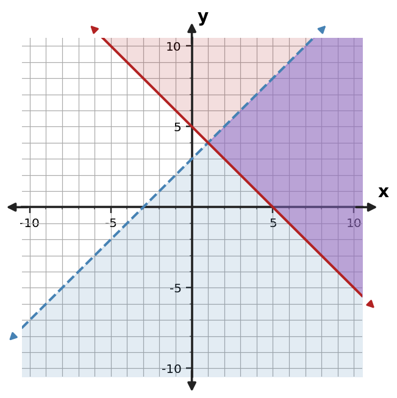
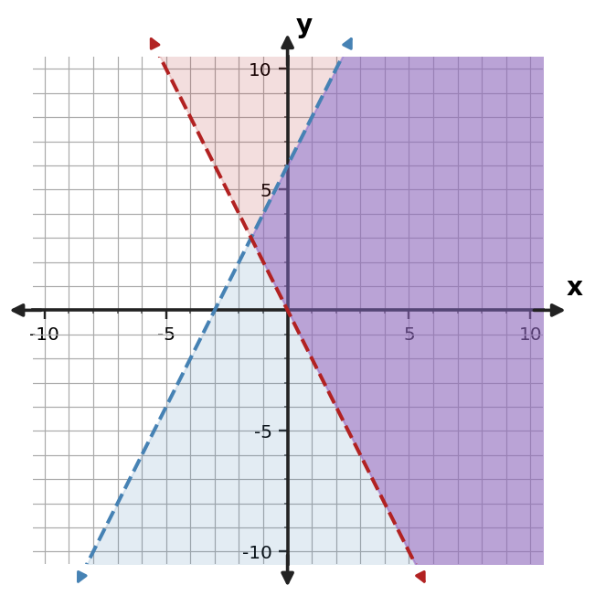
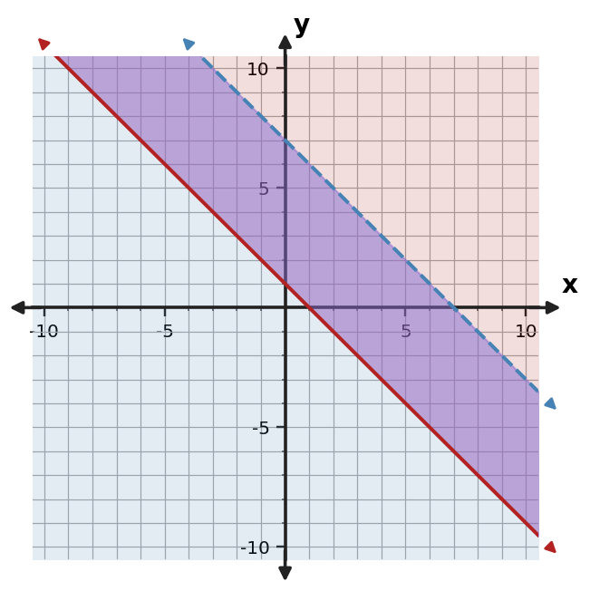
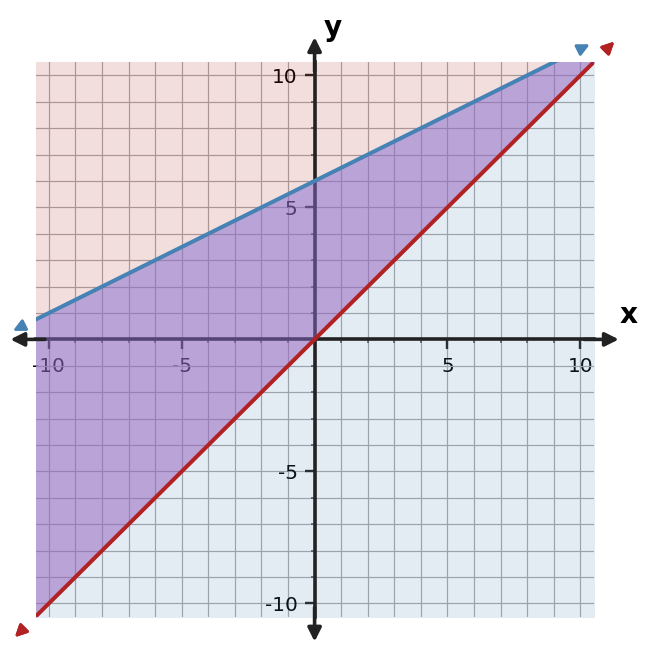
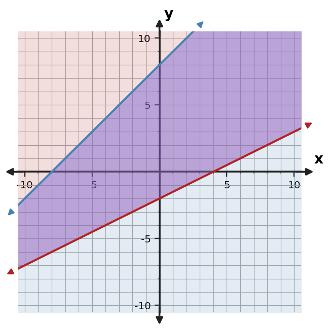

Algebra Practice 3.5 :::: Set 2
1. Use the graph to describe the feasible region of the system. Give one point that appears feasible.

2. A group has a limit of 28 total items split between notebooks and pens, and it needs at least 5 pens. Let $x$ be the number of notebooks and $y$ the number of pens. Write a system of inequalities, including nonnegativity.
3. The point $(5,10)$ satisfies $y\ge -x+5$ but does not satisfy $y\le x+4$. Can it belong to the feasible region of the system? Explain using the meaning of overlap.
4. Use the graph to describe the feasible region of the system. Give one point that appears feasible.

5. Use the graph to describe the feasible region of the system. Give one point that appears feasible.

6. Use the table to identify points that satisfy both $y\le x+7$ and $y\ge -x+2$.
| Point | Constraint 1 | Constraint 2 | Feasible |
|---|---|---|---|
| (0,0) | Yes | No | No |
| (2,3) | Yes | Yes | Yes |
| (4,12) | No | Yes | No |
7. Use the graph to describe the feasible region of the system. Give one point that appears feasible.

8. A workshop can make at most 21 kits in total and must make at least 4 of type $y$. Let $x$ and $y$ be the two types. Write a system of inequalities, including nonnegativity.
9. The point $(3,9)$ satisfies $y\ge -x+2$ but does not satisfy $y\le x+5$. Can it belong to the feasible region of the system? Explain using the meaning of overlap.
10. Use the graph to describe the feasible region of the system. Give one point that appears feasible.

11. Determine whether $(1,6)$ is feasible for $y\le x+10$ and $y\ge -x+2$. Show both checks.
12. Use the table to identify points that satisfy both $y\le 2x+5$ and $y\ge 0.5x-1$.
| Point | Constraint 1 | Constraint 2 | Feasible |
|---|---|---|---|
| (0,0) | Yes | Yes | Yes |
| (2,2) | Yes | Yes | Yes |
| (4,1) | Yes | Yes | Yes |
13. Use the graph to describe the feasible region of the system. Give one point that appears feasible.

14. A group has a limit of 23 total items split between team shirts and caps, and it needs at least 4 caps. Let $x$ be the number of team shirts and $y$ the number of caps. Write a system of inequalities, including nonnegativity.
15. The point $(5,12)$ satisfies $y\ge -x+5$ but does not satisfy $y\le x+6$. Can it belong to the feasible region of the system? Explain using the meaning of overlap.
16. Use the graph to describe the feasible region of the system. Give one point that appears feasible.

17. Determine whether $(2,3)$ is feasible for $y\le -x+5$ and $y\ge x+1$. Show both checks.
18. Use the table to identify points that satisfy both $y\le -x+6$ and $y\ge x$.
| Point | Constraint 1 | Constraint 2 | Feasible |
|---|---|---|---|
| (0,1) | Yes | Yes | Yes |
| (2,3) | Yes | Yes | Yes |
| (4,2) | Yes | No | No |
19. Use the graph to describe the feasible region of the system. Give one point that appears feasible.

20. A group has a limit of 24 total items split between robot kits and sensor kits, and it needs at least 10 sensor kits. Let $x$ be the number of robot kits and $y$ the number of sensor kits. Write a system of inequalities, including nonnegativity.
21. The point $(4,11)$ satisfies $y\ge -x+3$ but does not satisfy $y\le x+6$. Can it belong to the feasible region of the system? Explain using the meaning of overlap.
22. Use the graph to describe the feasible region of the system. Give one point that appears feasible.

23. Determine whether $(0,2)$ is feasible for $y\le -x+3$ and $y\ge x$. Show both checks.
24. Use the table to identify points that satisfy both $y\le x+7$ and $y\ge -x+1$.
| Point | Constraint 1 | Constraint 2 | Feasible |
|---|---|---|---|
| (0,-1) | Yes | No | No |
| (2,1) | Yes | Yes | Yes |
| (4,0) | Yes | Yes | Yes |